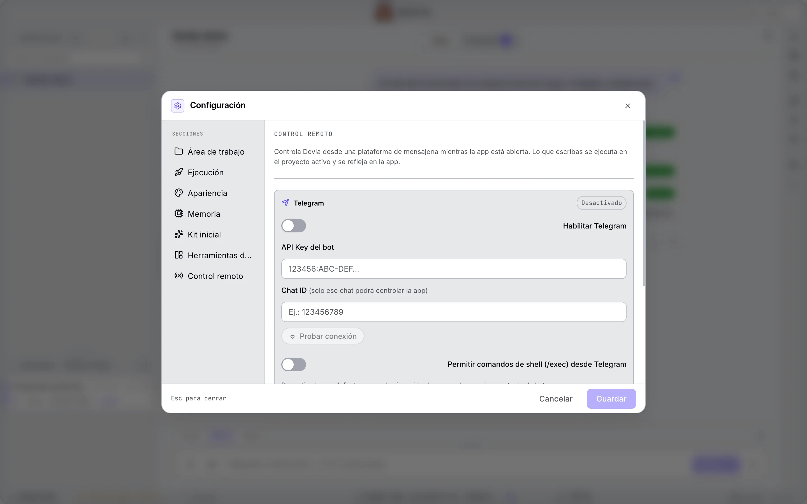

Deine Coding-Agenten in einem Fenster
Eine Desktop-App zur Steuerung von Claude Code, Codex, Gemini und mehr.

-
Agenten und Ausführung
Arbeite mit Claude Code, Codex, Gemini CLI, OpenCode, Cursor Agent, Copilot, Grok, Pi, Kimi, Hermes, Qwen, Qoder und DeepSeek oder füge deinen eigenen hinzu, wenn er ACP spricht. Wechsle mitten in der Sitzung den Agenten und wähle zwischen plan, apply und apply-yolo.

-
Kontext und Gedächtnis
Persistentes Gedächtnis über Sitzungen hinweg, Verlauf pro Projekt, Kontext, Kosten und Tokens im Blick. Ein eigener Code-Graph gibt dem Agenten die Projektstruktur, und code mode führt schreibgeschützte Skripte über deine MCP-Server aus.

-
Methode und Planung
Ein kanban pro Projekt, das der Agent selbst liest und aktualisiert, mit Specs, Aufgaben und Abhängigkeiten. Devia Method leitet die Arbeit an, und interaktive Karten stellen dir Fragen, bitten um Plan-Freigaben oder Änderungs-Reviews, mit jedem Agenten.

-
Git und Review
Repository-Status, Inline-Diffs und Branch-Wechsel. Kommentiere Zeilen im Diff und sende sie dem Agenten als Review. Bis zu vier Agenten parallel, jeder isoliert in seinem eigenen git worktree.

-
Fernsteuerung und Plattform
Steuere deine Agenten per Telegram, auch mit Dateiversand, solange Devia geöffnet ist. Integriertes Terminal, Docker Compose und Öffnen in deiner IDE, unter Windows, macOS und Linux.

Alles auf deiner Maschine
- Deine Sitzungen, dein Gedächtnis, dein kanban und deine Konfiguration liegen auf deiner Festplatte (
~/.devia-app/). - Keine Konten und keine Devia-Cloud.
- Deine Maschine verlässt nur das, was das CLI des jeweiligen Agenten an seinen Anbieter sendet.
Devia Desktop herunterladen
Kostenlos und Open Source (Apache-2.0), mit allen Funktionen.